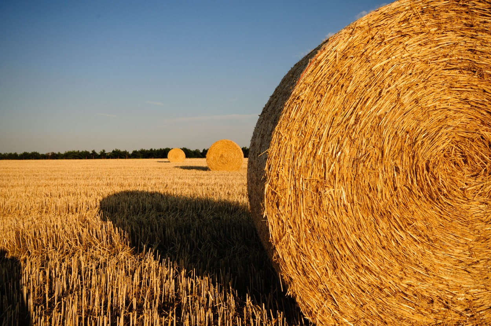
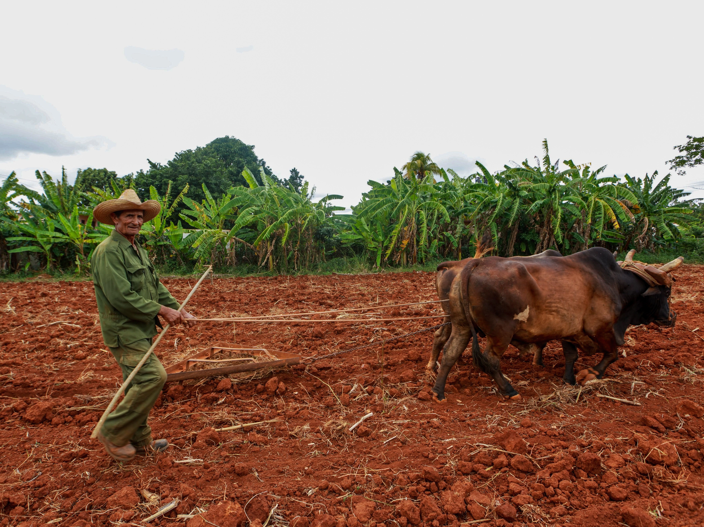
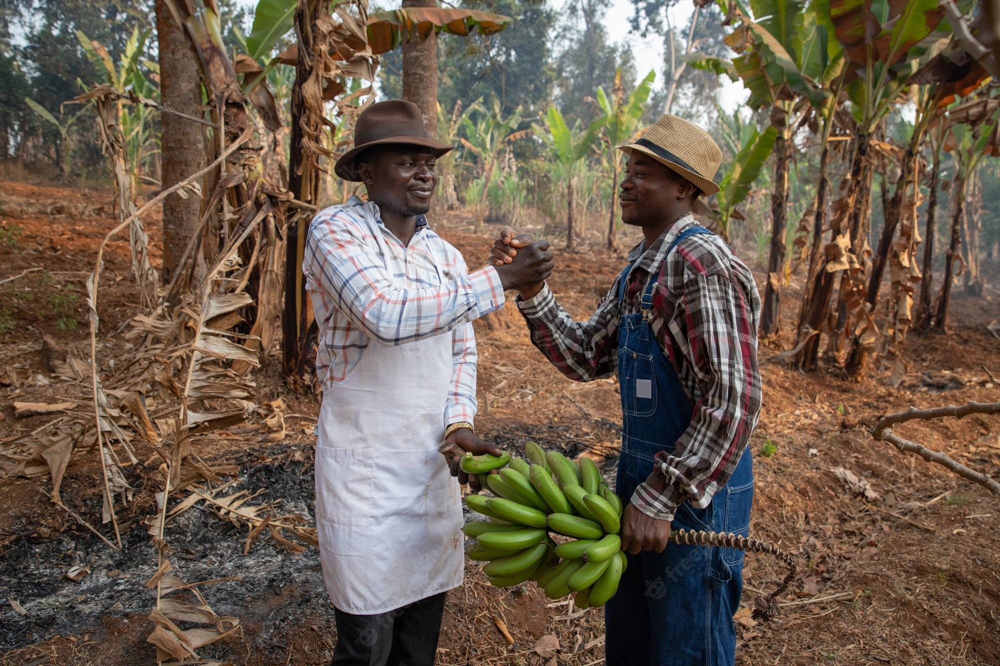

Core Business
Sudi Farms' core strength is its large-scale farming operations, which enables us to achieve better quality and service levels. Today, Sudi has a land bank of 850 hectares in Kenya across three separate farms in Muranga with 80% of Sudi raw material being grown on Sudi farms.

Environmental Sustainability

Ethically Conduct Business

Community Outreach
Work With Us
Training Programs
We are committed to the recruitment of Kenyan management trainees with an expansion of our robust training programs at all levels to meet demand.
Be A Donor
Here at Sudi Farm we believe in gving back to the community. Help us give back by becoming a donor of our outreach program